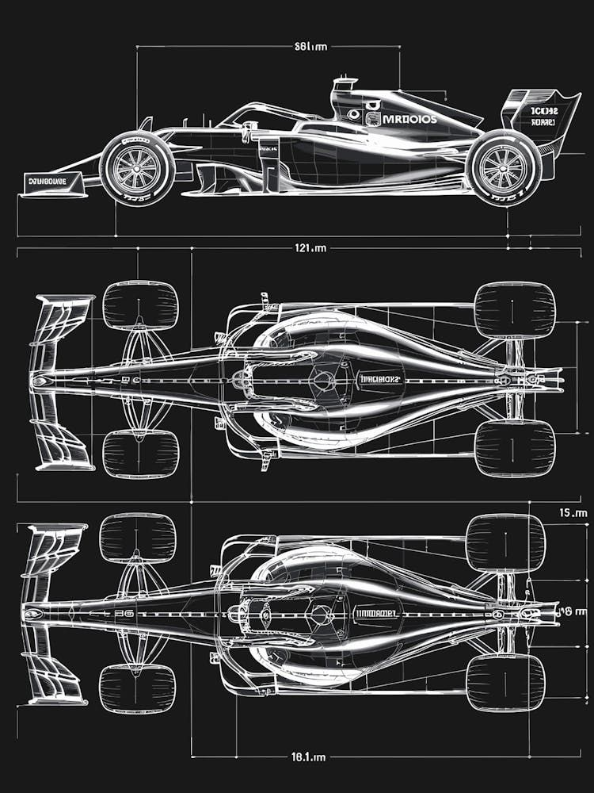

Чертеж болида Формулы-1
Школьный проект об устройстве самых быстрых машин на планете

🕳️ Прижимная сила: Это главная цель всей аэродинамики Ф1. В отличие от самолета, который воздух поднимает вверх, детали болида прижимают машину к асфальту. Благодаря этому болид может проходить повороты на безумной скорости и не вылетать с трассы. 📐 Переднее крыло: Самая важная деталь для управления воздухом. Оно первым встречает поток ветра, рассекает его и направляет дальше — к колесам, мотору и под днище, чтобы машина идеально слушалась руля. ⚡ Заднее крыло (Спойлер): Создает мощную прижимную силу на задние колеса, чтобы они не буксовали. На нем установлена подвижная планка — система DRS. На прямых участках пилот может открыть крыло кнопкой на руле, снизить сопротивление воздуха и обогнать соперника на высокой скорости. 🌱 Эффект земли (Ground Effect): Днище болида имеет особую форму со скрытыми каналами (трубками Вентури). Воздух под машиной мчится с огромной скоростью, создавая под ней вакуум. В итоге болид буквально присасывает к дороге мощной невидимой силой.
• 🏎️ ДВС (Двигатель внутреннего сгорания): Турбированный мотор V6 объемом всего 1.6 литра. По объему он такой же, как в обычной городской легковушке, но за счет огромных оборотов (до 15 000 в минуту), прочных материалов и мощной турбины один только этот блок выдает около 700 лошадиных сил. ⚛️ MGU-K (Мотор-генератор кинетической энергии): Эта система подключена к задней оси болида. Когда пилот нажимает на тормоз, MGU-K работает как генератор: он собирает энергию торможения и превращает её в электричество, заряжая батарею. При разгоне этот же прибор превращается в мощный электромотор, добавляя машине еще 160 лошадиных сил. 🔥 MGU-H (Мотор-генератор тепловой энергии): Самый сложный узел. Он соединен с турбиной и собирает тепловую энергию выхлопных газов. Эта система не дает турбине «задерживать» обороты (убирает турбояму) и постоянно подзаряжает батарею, даже когда гонщик просто жмет на газ. 🔋 Батарея (Energy Store): Специальный литий-ионный аккумулятор весом около 20–25 кг. Он собирает энергию от MGU-K и MGU-H. Пилот может активировать накопленный заряд кнопкой на руле (например, для обгона), получая мощный электрический пинок к скорости.
Кокпит — это рабочее место пилота. Самые заметные детали здесь —💺 Анатомическое сиденье: Кресло пилота отливается из углепластика строго по форме его тела. В нем сидят почти полулежа, а пристегивают гонщика жесткими 6-точечными ремнями безопасности, как в истребителе. 🕹️ Высокотехнологичный руль: Это главный компьютер болида стоимостью как хорошая квартира. На нем расположено около 25 кнопок, переключателей и цветной экран. Пилот прямо на ходу меняет настройки мотора, баланс тормозов и общается с инженерами. 🛡️ Капсула выживания (Монокок): Сам кокпит — это сверхпрочная углепластиковая коробка. Она рассчитана так, чтобы остаться целой и защитить пилота даже при страшном ударе о стену на скорости 300 км/ч. 🛟 Система Halo: Титановая дуга безопасности над головой гонщика. Она весит всего 9 кг, но может выдержать вес двухэтажного автобуса, защищая голову от летящих колес и обломков других машин.
Шины — это ключевые элементы сцепления. В Ф1 используются: 🔴 Мягкие (Soft) — самые быстрые, но быстро стираются. Нужны для максимальной скорости на короткое время. 🟡 Средние (Medium) — универсальный вариант. Хорошая скорость и средняя прочность, подходят для большинства кругов гонки. ⚪ Жесткие (Hard) — самые прочные и долговечные шины. Едут чуть медленнее, но выдерживают огромную дистанцию без замены. 🟢 Промежуточные (Intermediate) — шины для легкого дождя или подсыхающей трассы. Канавки на них отводят небольшую влагу. 🔵 Дождевые (Wet) — созданы для сильного ливня и глубоких луж. Спасают болид от скольжения по воде, выбрасывая тонны брызг в секунду. Они работают эффективно, только когда прогреты до 100°C.
Тормоза сделаны из карбона. Они способны остановить болид с 300 км/ч до нуля всего за 4 секунды, разогреваясь при этом до 1000°C (и светясь в темноте красным).
Нажмите на эмодзи, чтобы оставить свой голос: